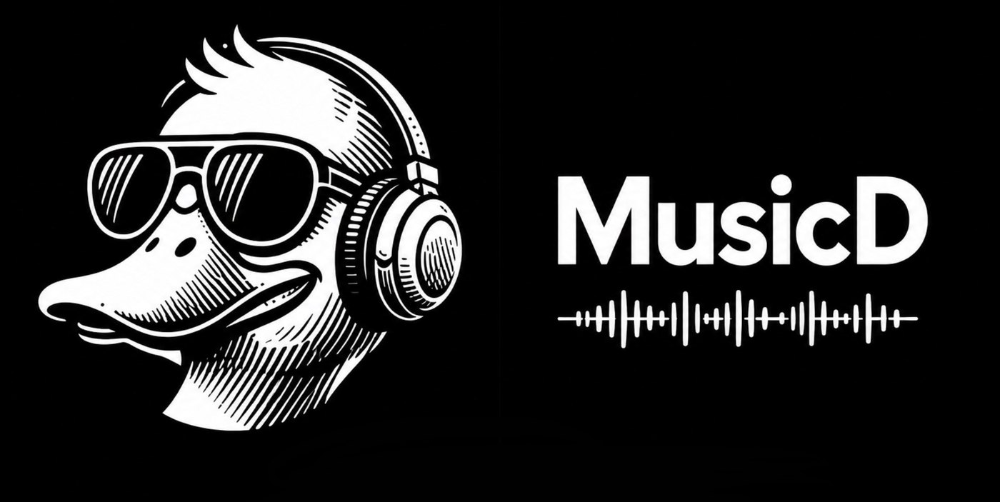

Audirvana and Mandarin, sharing your USB DACs. The bridge holds each DAC exclusively, switches it to every track's own sample rate, plays the samples untouched, and offers it on your network as a UPnP renderer, so either app can play to it, but never both at once.
On a Mac, Audirvana takes a USB DAC in exclusive (hog) mode to switch its sample rate. While it holds the DAC, nothing else can see it, so Mandarin finds no DAC. The bridge takes each DAC itself, and offers it to both apps over the network.
Whichever app starts playing owns that DAC. If the other app tries to change anything while it plays, the bridge refuses it (UPnP error 705, Transport is locked). The owner keeps the DAC for 10 seconds after it stops, so it doesn't lose it between tracks.
Nothing to set up. Plug a DAC in and it appears, on the page and on the network, within a few seconds.
Each USB DAC is held whether it's playing or not, so no app can grab it behind your back. On a Mac
that's Core Audio's hog mode; on Linux it's the ALSA hw: device, held open.
The DAC switches to every track's own rate: 44.1, 96, 192, up to 768 kHz. The samples reach it unchanged, and the track is resampled only when the DAC can't take its rate.
Audirvana or Mandarin, whichever is playing, is in control. The other is kept out until it stops, and the page shows who has each DAC and who was kept out.
DSF and DFF files go to the DAC as DoP, untouched (DSD64 to DSD256). DoP is on automatically when a DAC reports native DSD; elsewhere, switch it on per DAC.
When an app sends the next track ahead of time, a track at the same rate follows with no gap. A different rate plays out first, then the DAC switches.
Open http://<machine>:55500 on any phone or computer: a tile per DAC, with its name
and model. Tap one for its rates, depths, DSD and formats; the ✕ takes you back.
The easy way: one line in Terminal. macOS 14 or newer, macOS 27 included, Apple silicon or Intel. No Docker needed.
/bin/bash -c "$(curl -fsSL https://raw.githubusercontent.com/meltface-80/Mandarin-DAC-Bridge/main/tools/mac/install.sh)"
~/Mandarin-DAC-Bridge. To update, paste the same line again; your settings are kept.Download mandarin-dac-bridge-osx-arm64.tar.gz
(Apple silicon) or -osx-x64 (Intel) from the
latest release, then:
brew install ffmpeg mkdir -p ~/Mandarin-DAC-Bridge tar -xzf ~/Downloads/mandarin-dac-bridge-osx-*.tar.gz -C ~/Mandarin-DAC-Bridge ~/Mandarin-DAC-Bridge/mandarin-dac-bridge --list # the DACs it can see ~/Mandarin-DAC-Bridge/mandarin-dac-bridge # run it; Control-C stops it
On an always-on Linux machine with the DACs plugged into it: DietPi on an Intel i5, a NUC, a Raspberry Pi 4/5 on a 64-bit OS. Choose docker run or docker compose, fill in what you need and copy the command. Docker builds the bridge from this repository the first time.
--network host is required. Audirvana and Mandarin find the bridge by multicast,
which doesn't cross Docker's bridge network. Docker Desktop for Mac and Windows has no real host networking:
on a Mac, use the one-line install.--device /dev/snd, --privileged and
-v /dev/snd:/dev/snd work together: the first hands the sound devices to the container,
the second lets it open them, and the mount keeps the list current, so a DAC plugged in later is
found too. Leave out any of them and the DACs may not appear.--device /dev/snd,
switch off its local output for the DACs (Settings → Audio Devices), so the bridge can hold them.If Docker isn't installed:
dietpi-software install 162 (Docker) and 134 (Docker Compose) on DietPi, or
curl -fsSL https://get.docker.com | sh on Debian, Ubuntu and Raspberry Pi OS. Building from the
repository needs git (apt install git).
Each DAC appears on your network as "<its name> (Bridge)", for example Topping D90 (Bridge).
Settings → Audio → choose "<DAC> (Bridge)" in the UPnP list, not the DAC itself. While Audirvana still holds the DAC directly, its tile on the bridge's page says Waiting · Audirvana has the DAC. The bridge takes the DAC the moment Audirvana lets go of it.
Settings → Audio Devices → choose "<DAC> (Bridge)". If Mandarin's own local output for that DAC is switched on, switch it off: the bridge owns the DAC now. Volume stays at 100% for bit-perfect playback; use the DAC's or amplifier's volume.
Removing the bridge gives the DACs straight back to the machine and its apps. Point Audirvana and Mandarin at the DACs directly again afterwards.
/bin/bash -c "$(curl -fsSL https://raw.githubusercontent.com/meltface-80/Mandarin-DAC-Bridge/main/tools/mac/uninstall.sh)"
~/Mandarin-DAC-Bridge
(the program, its settings and its log). Homebrew and ffmpeg stay, because Mandarin uses them too. If
nothing else needs ffmpeg: brew uninstall ffmpeg.launchctl unload ~/Library/LaunchAgents/app.mandarin.dacbridge.plist rm -f ~/Library/LaunchAgents/app.mandarin.dacbridge.plist rm -rf ~/Mandarin-DAC-Bridge
# Stop and remove the container, its image and its settings volume
docker stop mandarin-dac-bridge
docker rm mandarin-dac-bridge
docker rmi mandarin-dac-bridge
docker volume rm dac-bridge-data
# In the folder with the docker-compose.yml
docker compose down --rmi local --volumes
--volumes deletes the settings too; leave it out to keep them. Then delete the
folder: cd .. && rm -rf mandarin-dac-bridge.None are needed. On a DAC's page you can switch the bridge off for that DAC (it lets go and the machine can use it), choose how DSD files go (Auto, DoP or PCM), and hand the DAC over to another app at once (Release). The rest are environment variables.
| Variable | Default | What it does |
|---|---|---|
| PORT | 55500 | The page and the UPnP devices. |
| BRIDGE_IP | — | The address to advertise, if the machine is on several networks. |
| LOCK_GRACE_S | 10 | How long an app keeps a DAC after it stops or pauses. |
| MANDARIN_PORT | 3500 | Mandarin's port, used to recognise its streams. |
| BRIDGE_ALL_OUTPUTS | — | 1 also offers non-USB outputs. |
| BRIDGE_NAME_SUFFIX | " (Bridge)" | Added to each DAC's name on the network. |
| DATA_DIR | data/ | Where settings.json lives (/data in Docker). |
| macOS | Linux / Docker | |
|---|---|---|
| Exclusive hold | Core Audio hog mode | ALSA hw: device, held open |
| Rate switching | The DAC's physical format, per track | hw params, per track |
| Bit-perfect | Up to 24-bit | Up to 32-bit |
| DSD | DoP: switch it on per DAC | DoP: on automatically for DACs reporting DSD |
| Settings live | ~/Library/LaunchAgents/app.mandarin.dacbridge.plist | environment: in the compose file, or -e |
The log: ~/Mandarin-DAC-Bridge/data/bridge.log on a Mac,
docker logs mandarin-dac-bridge in Docker.
The page names the app. Point it at the bridge's UPnP device instead, or quit it; the bridge takes the DAC within two seconds.
The bridge and the apps must be on the same network. On a Mac, allow mandarin-dac-bridge under System
Settings → Privacy & Security → Local Network. In Docker, use --network host. On a machine
with several networks, set BRIDGE_IP.
That's the bridge keeping the apps apart. Stop the one playing (it keeps the DAC 10 seconds), or press Release on the DAC's page.
Check cat /proc/asound/cards on the host lists the DAC, and that the command still has
all three of --device /dev/snd, --privileged and
-v /dev/snd:/dev/snd. docker exec mandarin-dac-bridge /app/mandarin-dac-bridge --diagnose
shows what the container sees.